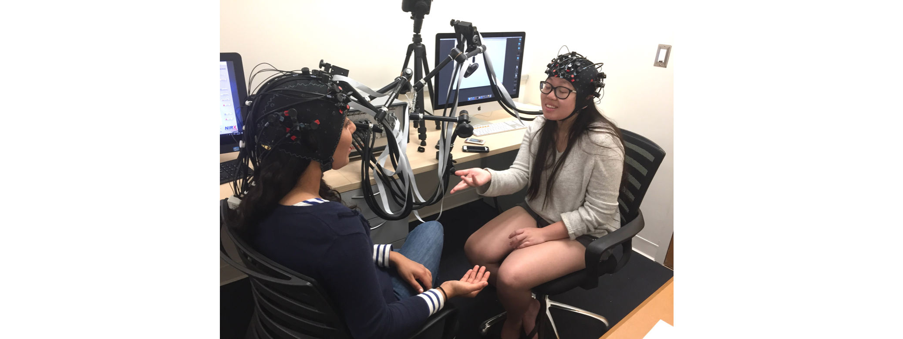

Interpersonal Communication
Successful communication between people necessarily requires that the ideas from my mind make it into your mind in roughly the same form, and vice versa. What are the mental and psychological processes that enable this tranference, when we aren’t physically wired together? I am interested in investigating the processes by which we recreate our mental states within other people - how we share and merge minds.
Group Mental Processes
Under conditions of successful communication, groups of people can potentially function like one emergent organism. Much as one person’s brain solves complex tasks by integrating separate but complementary function across a network of brain regions, groups of people may also organize themselves into a larger cognitive unit by aligning themselves to a superordinate goal, dividing up subtasks, relegating certain functions to certain members, etc. I am also interested in studying how small groups organize their cognitive functioning for the purpose of completeing a joint task, and what sort of behavioral and neural patterns between people predict better group performance.
Neuroscience of Social Influence
Early in my graduate career I focused on studying the neural markers of social influence. In particular, what are the brain signals that indicate persuasion? Can we use these signals to improve our predictions of behavioral change over and above self-report? And what do these particular signals say about how the process by which persuasion in the brain occurs?
Naturalistic Neuroimaging in Social Neuroscience
Social neuroscience is the study of neural processes in context - around other people, in certain moments, contingent on personal ideosyncracies, etc. But most neuroimaging methods in social neuroscience require participants to be alone and immobile, stripping most of the rich experience of everyday life from our experiments. So on top of my theoretical research interests, I have worked to situate functional near infrared spectroscopy (fNIRS) as a useful tool for social neuroscience research, since it is a mobile neuroimaging device that can tolerate participant motion. In particular I have developed code for processing and analyzing fNIRS data, created workshop material to train new fNIRS researchers, and written about the unique uses of fNIRS for social neuroscience.
